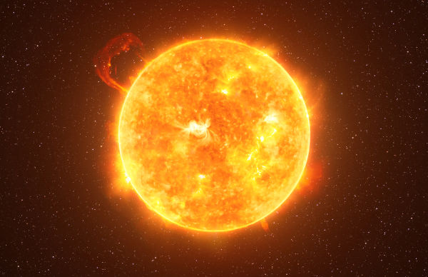
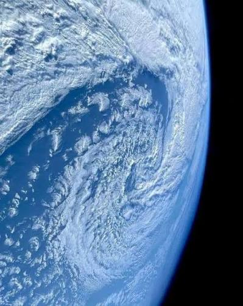

O que é o Sistema Solar?
O Sistema Solar é um conjunto composto pelo Sol e por todos os corpos celestes que orbitam ao seu redor sob a influência de sua intensa atração gravitacional. Está localizado no Braço de Órion, uma das estruturas espirais da galáxia Via Láctea. Estima-se que tenha se formado há aproximadamente 4,6 bilhões de anos a partir do colapso gravitacional de uma vasta e densa nuvem molecular de gás e poeira interstelars.

>Classificação dos Corpos Celestes
De acordo com as diretrizes da União Astronômica Internacional (IAU), os corpos celestes que gravitam ao redor do Sol dividem-se em três categorias principais de acordo com sua massa e dinâmica orbital:
- Planetas Telúricos (Rochosos): Mercúrio, Vênus, Terra e Marte. Apresentam superfícies sólidas, alta densidade e composição rica em minerais e metais.
- Planetas Jovianos (Gasosos e Gelados): Júpiter, Saturno, Urano e Netuno. São caracterizados por grandes dimensões e atmosferas densas formadas por hidrogênio, hélio e compostos voláteis.
- Planetas Anões: Corpos como Plutão, Ceres e Éris, que possuem massa suficiente para manter o equilíbrio hidrostático, mas não dominaram gravitacionalmente sua vizinhança orbital.
O Planeta Terra e a Zona Habitável
A Terra ocupa a terceira posição em relação ao Sol e possui características únicas conhecidas no universo. Localizada dentro da chamada "zona habitável", a distância do Sol permite que a água permaneça em estado líquido em sua superfície, fator fundamental para o surgimento e manutenção da vida.

O Campo Magnético e a Atmosfera Protetora
A rotação do núcleo metálico terrestre gera um dinâmico campo magnético (a magnetosfera) que, em conjunto com a atmosfera rica em nitrogênio e oxigênio, desvia partículas carregadas do vento solar e bloqueia radiações ultravioleta nocivas, preservando a estabilidade ambiental do planeta.